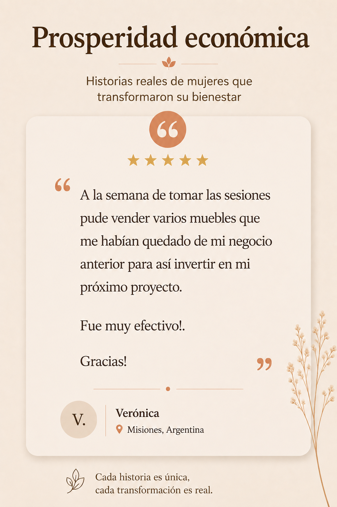
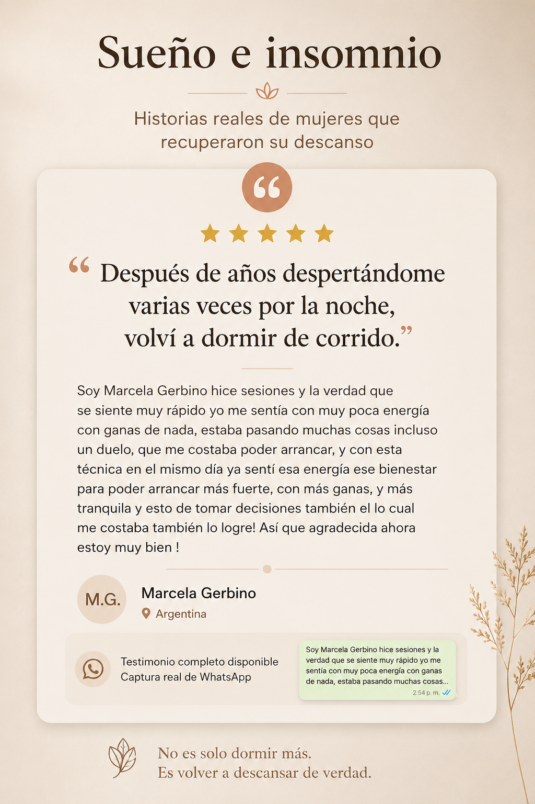
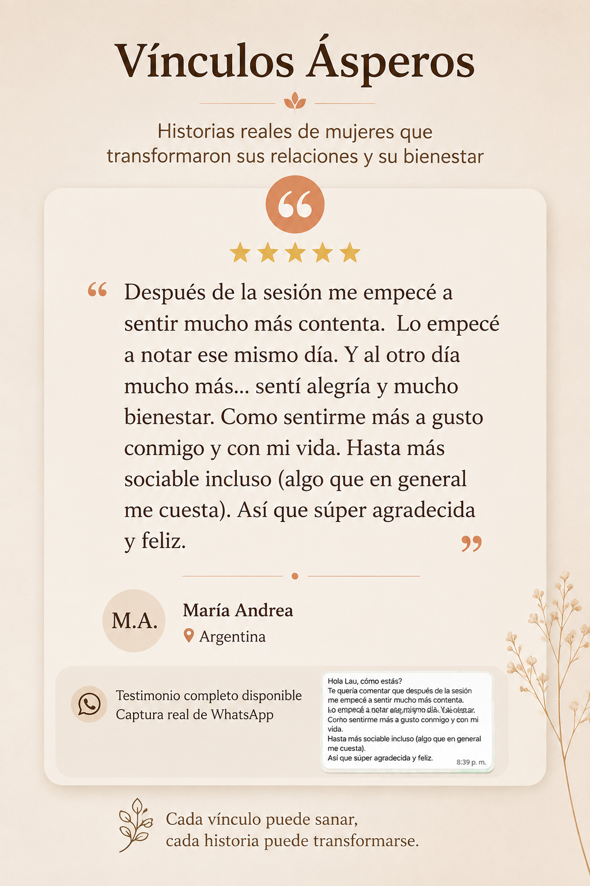
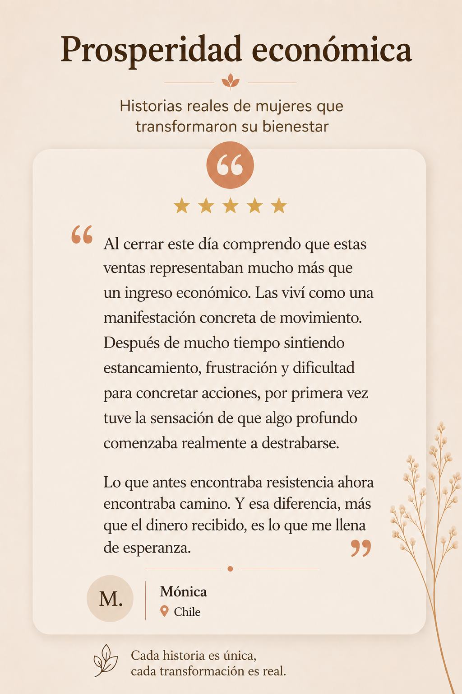
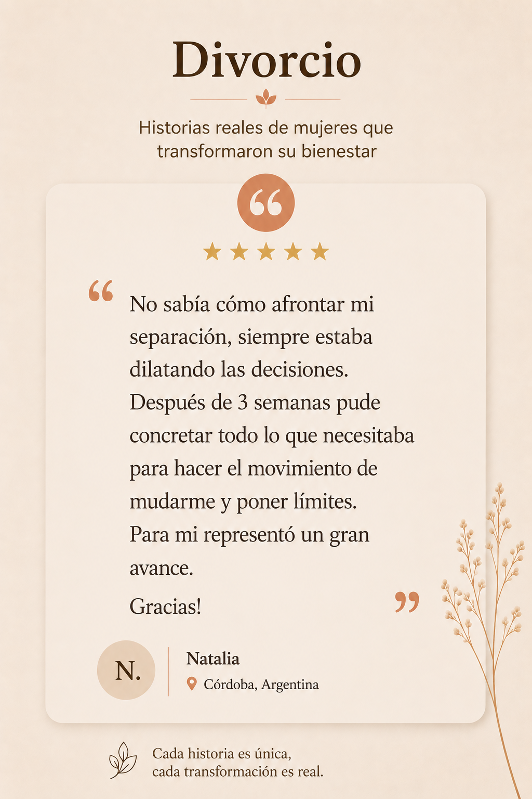
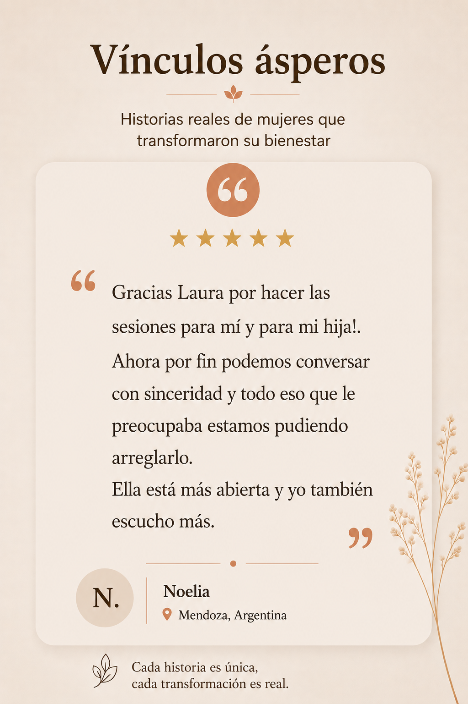
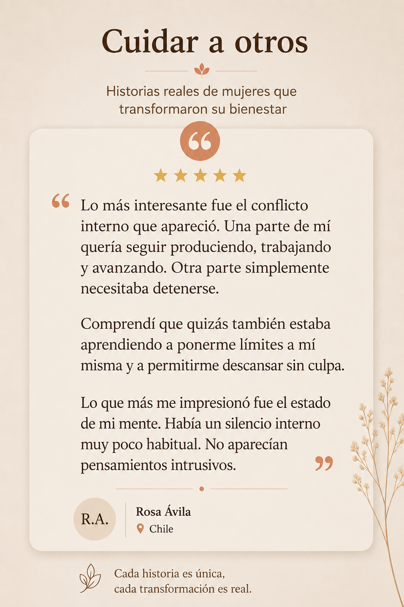
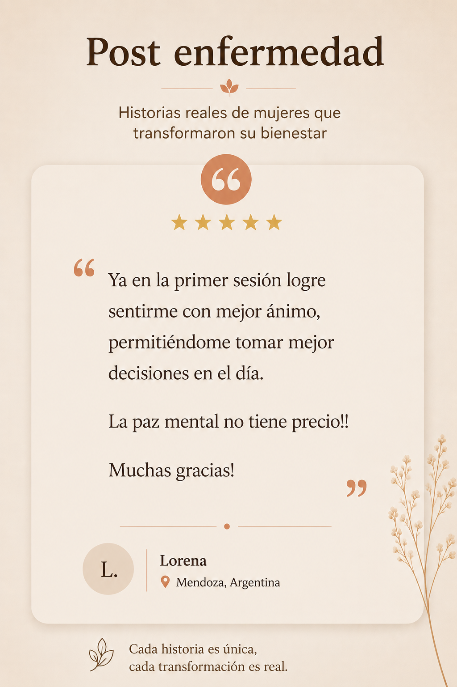

Así es como la perturbación energética actúa en diferentes tipos de caos. Sin esfuerzo, sin terapia, solo resultados.








No necesitas creer ciegamente en nada. Comprueba por ti mismo cómo trabaja la energía escalar durante 7 días totalmente gratis.
Activa tus 7 días gratis ⚡